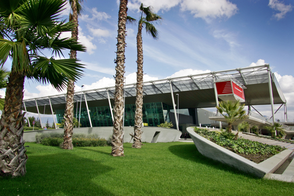
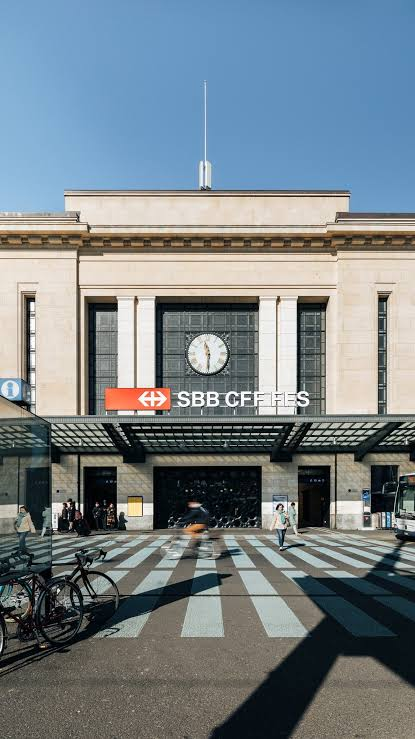

Introduction
Tirana, la capitale de l'Albanie, se trouve à environ 1 900 km de Genève par la route. Selon votre budget et le temps que vous avez, vous pouvez y aller en avion, en train et en ferry, en voiture ou en bus. Voici le détail de chaque solution.

En avion : le plus rapide
C'est la solution la plus simple. La compagnie easyJet propose des vols directs entre l'aéroport de Genève (GVA) et l'aéroport international de Tirana Nënë Tereza (TIA).
Durée : environ 2 h de vol.
Horaires : quelques vols par semaine, par exemple un départ de Genève à 6 h 45 et une arrivée à Tirana à 8 h 50.
Prix : à partir d'environ 100 à 140 € l'aller-retour. En août, c'est la haute saison et les prix sont plus élevés.
L'aéroport de Tirana est à environ 17 km du centre-ville. Il faut environ 30 minutes pour rejoindre le centre en bus ou en taxi.

En train et en ferry
Il n'existe pas de train direct entre la Suisse et l'Albanie. Il faut traverser l'Italie en train jusqu'à Bari, puis prendre un ferry jusqu'à Durrës, le plus grand port d'Albanie.
Étape 1 : train de la gare de Genève-Cornavin jusqu'à Bari, avec un changement à Milan. Le trajet dure environ 13 h (par exemple départ à 7 h 15, arrivée à 20 h 30).
Étape 2 : ferry de nuit de Bari à Durrës. La traversée dure environ 8 à 9 h.
Étape 3 : bus ou taxi de Durrës à Tirana, environ 1 h.
Durée totale : environ 24 h. Prix : environ 160 € pour le train et 50 à 70 € pour le ferry.

En voiture
Distance : environ 1 900 km. Durée : environ 21 h 30 de route, à faire sur au moins 2 jours.
Il y a deux itinéraires possibles : traverser l'Italie jusqu'à Bari et prendre le ferry avec la voiture, ou passer par les Balkans (Slovénie, Croatie, Monténégro).
Carburant : environ 220 € pour l'aller avec une voiture diesel.
Péages : il faut la vignette autoroutière suisse (40 CHF), puis payer les péages des autoroutes italiennes. Par les Balkans, il faut aussi une vignette en Slovénie et payer les péages en Croatie.
En bus
Des bus relient directement Genève à Tirana, avec FlixBus ou avec des compagnies albanaises.
Départ : gare routière de Genève, vers 11 h ou 14 h selon la compagnie. Arrivée : terminal Est de Tirana.
Durée : environ 30 à 32 h. Prix : à partir d'environ 115 à 150 €.
C'est souvent la solution la moins chère, mais aussi la plus longue.